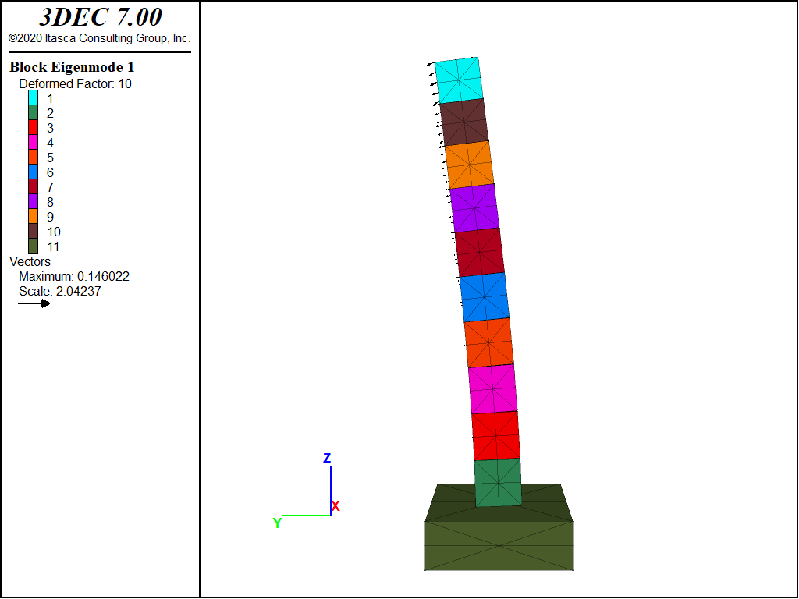
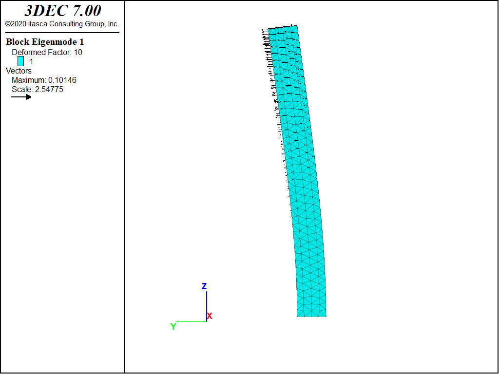

固有频率与振型的计算
3DEC 主要旨在模拟结构破坏。然而，为了满足完整的实际应用，3DEC 还应能够准确模拟结构在弹性范围内的动力反应。3DEC 块体模型在弹性范围内受动力激振时的性能，可通过计算小振幅振动的固有频率和振型来证明。
3DEC 中包含 block dynamic eigen modes 命令，执行该命令可计算块体系统中不同振动模态的固有频率。该命令仅适用于刚性块体模型。固有频率和振型的计算假定结构体系是弹性的。刚性块体体系的运动学变量是每个块体的 6 个自由度，即 3 个平动和 3 个转动。在刚性块体模型中，可变形性由节理刚度给出。组装刚性块体体系的整体刚度矩阵，它将相邻块体施加于某块体的力和力矩与该块体的位移和转角联系起来。质量矩阵假定为对角矩阵，对每个块体由 3 个等于块体质量的元素和 3 个沿坐标方向的惯性矩组成。这一假定包含近似，因为沿坐标方向的惯性矩一般并不是块体的主惯性矩。
整体刚度矩阵通过组装每个子接触的单元刚度矩阵形成。假定位移很小，对接触的两个块体分别考虑单位平动位移和单位转角。对于这 12 种位形中的每一种，根据法向刚度、剪切刚度和子接触面积计算子接触的法向力和剪切力。由此在每个块体质心处产生的力和力矩，构成 12 种位形下接触刚度矩阵的各列。将各子接触单元矩阵相加，即得到两个块体之间接触的刚度矩阵。组装所有接触矩阵即可得到整体刚度矩阵。
采用简单的向量迭代过程计算特征值。该算法给出所要求的前 N 个特征值，但其排序不一定总是准确的，例如在存在重特征值时（如对称结构）。必须至少固定一个块体，且体系中不能有完全孤立的块体。动力（未缩放）质量必须已经计算。因此，必须先给出 model dynamic active on 命令，随后给出 model cycle 0 命令以强制计算动力质量。刚度矩阵需要较大的存储空间。因此，建议在特征值计算之后不要继续运行（即在其之前保存状态，并从该保存文件继续动力分析）。
3DEC 块体模型在低幅振动下的反应，可通过柱体和墙体的弯曲分析进行验证。Lemos（2007）给出了两个验证算例：方形柱的弹性振动模态和变厚度墙体的弹性振动模态。此处给出方形柱算例的一个版本。验证对象为一个高 10 m、截面为 1 × 1 m 的方形柱。
刚性块体示例
该柱由 10 个块体组成，并假定底部固定，见 图 dyn-clcs-pqqm（Figure dyn-clcs-pqqm）Figure dyn-clcs-pqqm。
柱体材料的质量密度为 2500 kg/m3。块体为刚性，法向刚度和剪切刚度分别为 1.0 GPa/m 和 0.4 GPa/m。3DEC 模型的数据文件列于 :ref:` SquarePillar.dat <DynamicElasticVibration>`。执行 block dynamic eigen modes 6 命令计算前六个振型。在 3DEC 中计算得到的这些模态的描述如下：
模态 1 —— 第 1 阶弯曲模态
模态 2 —— 与模态 1 正交的振型
模态 3 —— 第 2 阶弯曲模态
模态 4 —— 与模态 2 正交的振型
模态 5 —— 第 1 阶扭转模态
模态 6 —— 第 3 阶弯曲模态
请注意，为更准确地表示弯曲行为，本模型在刚性块体之间增设了接触。这通过 block face triangulate radial-8 命令实现：该命令在两个刚性块体之间添加 1 个中心顶点和 4 个边中点，从而形成共 9 个点接触。这可改善弯矩的计算（见 Lemos 2007）。


图 1：具有模态 1 变形的刚性块体方形柱模型。
将该柱前三个弯曲模态的固有频率与由 Timoshenko 梁理论计算得到的值进行比较（Chopra，1995；Ferreira 和 Fasshauer，2006）。前三个弯曲模态的固有频率列于下文。这些值与 Timoshenko 梁理论的值比较接近。
| 弯曲 模态 |
3DEC 刚性块体 模型 |
Timoshenko 梁理论 |
|---|---|---|
| 第 1 阶 | 1.07 | 1.02 |
| 第 2 阶 | 6.56 | 6.09 |
| 第 3 阶 | 14.8 | 16.1 |
数据文件 - SquarePillar.dat
program log-file "Rigid.log"
program log on
model new
model title
Elastic vibration modes of a square pillar
;
model config dyn
model large-strain off
;
; --- 几何形状 ---
block create brick 0 1 0 1 0 10
block cut j-set dip 0 dip-dir 0 origin 0 0 1
block cut j-set dip 0 dip-dir 0 origin 0 0 2
block cut j-set dip 0 dip-dir 0 origin 0 0 3
block cut j-set dip 0 dip-dir 0 origin 0 0 4
block cut j-set dip 0 dip-dir 0 origin 0 0 5
block cut j-set dip 0 dip-dir 0 origin 0 0 6
block cut j-set dip 0 dip-dir 0 origin 0 0 7
block cut j-set dip 0 dip-dir 0 origin 0 0 8
block cut j-set dip 0 dip-dir 0 origin 0 0 9
block create brick -1 2 -1 2 -1 0 group 'base'
; --- 生成子接触 ---
block face triangulate radial-8
block contact gen-sub
; --- 参数 ---
block prop dens 2500
block contact jmodel assign el
block contact prop stiffness-normal 1e9 stiffness-shear .4e9
block contact material-table default prop stiffness-normal 1e9 ...
stiffness-shear .4e9
block fix range group 'base'
;
; 计算前六阶模态的特征值
model cyc 1
block dynamic eigen modes 6
program log off
; 绘制第一阶模态
block dyn eigen setm
model save "sqpmodes"
可变形块体示例
该柱由 1 个块体组成，网格单元尺寸为 0.25 m。底部边界固定，如 图 dyn-clcs-pqqd（Figure dyn-clcs-pqqd）Figure dyn-clcs-pqqd 所示。
柱体材料的质量密度为 2500 kg/m3。杨氏模量和泊松比分别为 1.0 GPa 和 0.25。3DEC 模型的数据文件列于 :ref:` SquarePillarDeformable.dat <DynamicElasticVibration2>`。与上述刚性块体示例相同，执行 block dynamic eigen modes 6 命令计算前六个振型。


图 2：具有模态 1 变形的可变形块体方形柱模型。
将该柱前三个弯曲模态的固有频率与由 Timoshenko 梁理论计算得到的值进行比较（Chopra，1995；Ferreira 和 Fasshauer，2006）。前三个弯曲模态的固有频率列于下文。这些值与 Timoshenko 梁理论的值比较接近。
| 弯曲 模态 |
3DEC 可变形块体 模型 |
Timoshenko 梁理论 |
|---|---|---|
| 第 1 阶 | 1.09 | 1.02 |
| 第 2 阶 | 6.51 | 6.09 |
| 第 3 阶 | 15.8 | 16.1 |
数据文件 - SquarePillarDeformable.dat
program log-file "Deformable.log"
program log on
model new
model title
Elastic vibration modes of a square pillar
;
; 需要启用动力和有限元配置
model config dyn
model config fe
model large-strain off
model random 10000
;
; --- 几何形状 ---
block create brick 0 1 0 1 0 10
; --- 生成网格单元 ---
block zone generate edgelength 0.25
; --- 参数 ---
block prop dens 2500
block zone cmodel assign el
block zone prop dens 2500 young 1e9 poiss 0.25
block gridpoint apply vel 0 0 0 range pos-z 0
;
; 计算前六阶模态的特征值
model cyc 1
block dynamic eigen modes 6
program log off
; 绘制第一阶模态
block dyn eigen setm
model save "sqpmodes-deformable"
| 这些内容对您有帮助吗？… | FLAC3D © 2019, Itasca | 原文更新于 2020 年 10 月 8 日 |